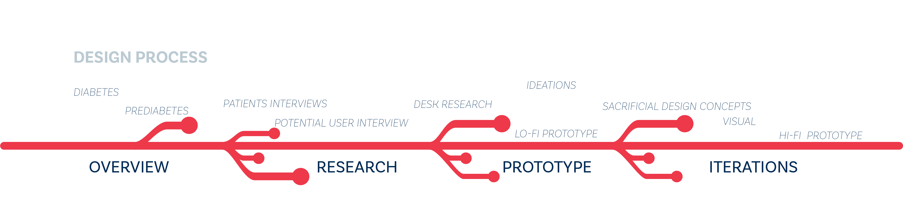

Prediabetes
Subjective
Conduct a research about prediabetes to gather situations, analyze facts, and synthesize them into insights and design scenarios to inform people about this disease. The goal is to improve people's behaviors and diet for healthier life.
My Roles UI Design - UX Research - Interview - Concept Model
Overview 4 weeks, 2018
